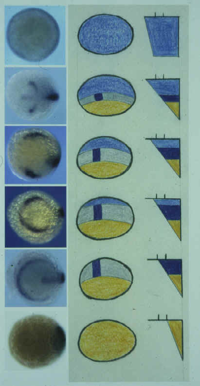
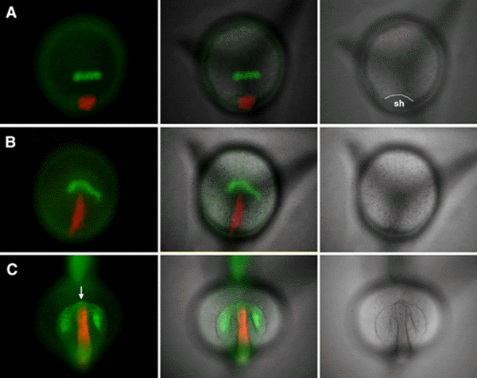
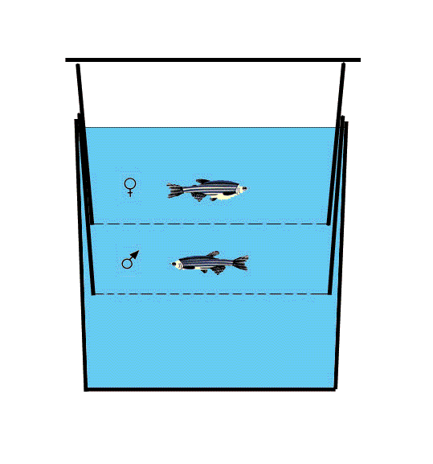

The Zebrafish Science Monitor, Vol. 6 (1) |
BMP ACTIVITY ESTABLISHES A GRADIENT OF POSITIONAL INFORMATION THROUGHOUT THE ENTIRE NEURAL PLATE
By K.A. Barth1, Y. Kishimoto2, K.B. Rohr1, C. Seydler2, S. Schulte-Merker2, and S.W. Wilson1, 1Department of Anatomy & Developmental Biology, University College London, Gower Street, London WC1E 6BT United Kingdom; 2Max-Planck Institut für Entwicklungsbiologie, Abteilung Genetik, Spemannstrasse 35, 72076 Tübingen, Germany
| Bone morphogenetic proteins (Bmps) are key
regulators of dorsoventral (DV) patterning. Within the ectoderm, Bmp activity has been
shown to inhibit neural development, promote epidermal differentiation and influence the
specification of dorsal neurons and neural crest. In this study, we examine the patterning
of neural tissue in mutant zebrafish embryos with compromised Bmp signaling activity. We
find that although Bmp activity does not influence anteroposterior (AP) patterning, it
does affect DV patterning in all AP levels of the neural plate. Thus, we show that Bmp
activity is required for specification of cell fates around the margin of the entire
neural plate, including forebrain regions that do not form neural crest. Surprisingly, we find that Bmp activity is also required for patterning neurons at all DV levels of the CNS. In swirl/bmp2b- (swr-) embryos, laterally positioned sensory neurons are absent whereas more medial interneuron populations are hugely expanded. However, in somitabun (sbn-) embryos, which probably retain higher residual Bmp activity, it is the sensory neurons and not the interneurons that are expanded. Conversely, in severely Bmp depleted embryos, both interneurons and sensory neurons are absent and it is the most medial neurons that are expanded. These results are consistent with there being a gradient of Bmp-dependent positional information extending throughout the entire neural and non-neural ectoderm. |
 |
Return to Table of Contents
ZEBRAFISH PATHOLOGY AND HEALTH SERVICES
By M. Westerfield, Zebrafish International Resource Center, 5274 University of Oregon, Eugene, OR 97405-5274 USA
Got some sick fish? The Zebrafish International Resource Center in Eugene may be able to help.
The Resource Center now provides diagnostic services and health status testing for laboratory zebrafish. The histopathology services can be utilized to analyze specific or suspected disease problems. Additional diagnostic services will be available in the near future and include necropsy, bacteriology and virology. Based on clinical history and test results specific recommendations for control or treatment of the problem will be provided. To analyze a disease problem within a colony, a sampling of 5-7 moribund fish is preferred. We are also interested in examining fish with suspected neoplasias or other problems that may involve only an individual fish.
Is your local animal use committee breathing down your neck? The Resource Center can also provide routine sentinel or quality control testing of zebrafish from healthy laboratory colonies. This information may be useful to fulfill institutional animal care and use committee (IACUC) health status monitoring requirements.
More information on the Zebrafish International Resource Center and Pathology Service is available at ZFIN (http://zfin.org/zirc/home/guide.php).
Contact Jennifer Matthews, DVM, Ph.D, (Email: jmatthews@uoneuro.uoregon.edu). A submission form and detailed information on sample preparation, submission and shipping will be provided.
Nominal fees are charged for these services.
Return to Table of Contents
THE WASHINGTON UNIVERSITY ZEBRAFISH GENOME RESOURCES PROJECT
By S.L. Johnson, Department of Genetics, Box 8232, Washington University School of Medicine, 4566 Scott Avenue, St. Louis, MO 63110 USA; http://dbbs.wustl.edu/RIB/Johnson_Stephen.html
The goal of the Zebrafish Genome Initiative is to provide tools that will better facilitate the identification of genes associated with mutant phenotypes. Projects funded by the initiative include development of chromosomal deletions, improvement of meiotic maps, gene discovery by ESTs, development of high density transcript maps and the improvement of inbred strains. Below I have outlined the contribution of Washington University Zebrafish Genomic Resources' (WUZGR) effort in EST and transcript mapping projects, including a brief progress report, how to use the resources, and how to acknowledge WUZGR data.
WashU Zebrafish
EST Project |
The Washington University
zebrafish EST project. ESTs (Expressed Sequence Tags) are high-throughput, single-pass sequence reads from cDNA clones. These reads can be from 5' or 3' ends of the cDNA, or both. As of Nov. 7, 1999, Washington University has submitted more than 38,000 zebrafish ESTs to GenBank, from ~ 25,000 independent cDNA clones. Our analysis suggests that we have identified between 10,000 and 15,000 genes to date. By the end of the project, we hope to have generated 100,000 ESTs, identifying 25,000 to 30,000 genes. The majority of clones in the Washington University Zebrafish EST project are provided by Matt Clark at the Max-Planck-Institute for Molecular Genetics (MPIMG) in Berlin. Matt uses oligonucleotide hybridization fingerprinting of arrayed cDNAs to detect redundancy in arrayed cDNA libraries, then rearrays minimally redundant clones for the Washington University-MPIMG EST collaboration. Matt is surveying nearly 300,000 cDNAs from a variety of cDNA libraries from different tissues and stages |
of development. In addition, we are using several non-normalized libraries for the EST project, including brain and nasal epithelium libraries (provided by John Ngai), kidney libraries (provided by Len Zon) and fin regeneration libraries (provided by Raymond Lee) that are serving smaller roles in the EST project. Additional cDNA libraries needed. Are you worried that your tissue or organ of interest is not well represented in the zebrafish EST project? We anticipate needing an additional 50,000 to 100,000 clones from normalized libraries as we obtain additional funding to extend the EST project. If you are interested in making normalized zebrafish libraries, contact Steve at sjohnson@genetics.wustl.edu.
Searching for ESTs. As EST data are generated, they are submitted to the dbEST division of NCBI. They can then be searched for sequence similarity using the NCBI BLAST server. It is important to use the correct database ("dbEST" or "other ESTs", rather than "NR"). Additional ESTs or clones from the same gene can be identified by BLASTing the EST database with the EST of interest, and then selecting for hits with nearly perfect matches. Alternatively, NCBI has begun a Unigene catalogue for zebrafish (http://www.ncbi.nlm.nih.gov/UniGene/Dr.Home.html). You can search this database with Zebrafish EST Accession numbers. The WUZGR site also presents zebrafish ESTs arranged by cluster (ESTs likely to belong to the same gene; see http://zfish.wustl.edu).
Clone retrieval. Most WUZGR EST clones are available from Research Genetics, Genome Systems, or the RZPD in Berlin (see dbEST submissions for links). Because errors are common in EST clone retrieval (see below), we recommend resequencing to confirm clone identity. From time-to-time, clones will be unavailable because the distributor has not yet received replicas of the library for clone retrieval. If you are in a hurry, you might try identifying additional EST clones from the same gene or cluster by searching the databases, or alternatively, use the EST sequence to design primers for 3' or 5' RACE to isolate your own clone. Clones are not available from WUZGR.
Errors in EST data. Because of the nature of high throughput sequencing projects, ESTs are subject to several types of error that need to be considered when using the data or retrieving EST clones. First, because the submissions result from single pass sequence, they are not subject to the same quality control as genomic sequence submissions. Typically, EST sequence is >95% accurate, but it is wrong to assume perfect sequence. Second, EST submission names may not correctly correspond to clone wells. For instance, errors in lane tracking of the sequencing gel may result in 3' or 5' reads that don't correspond to the same clone. Comparison of registration of 3' and 5' read BLAST hits on the WUZRG EST pages may help identify out-of-register ESTs. Finally, sometimes a set of sequencing reactions is associated with the wrong plate of clones. In collaboration with Research Genetics, we are rearraying and resequencing a fraction of the zebrafish EST clones to identify such errors in submission-to-plate correspondence. Resequencing data is used to help the distributors improve the accuracy of clone retrieval, or identify plates from which clones cannot be reliable retrieved.
RH - Transcript map of the zebrafish genome. A second goal of WUZGR project is to develop a high density transcript map of the zebrafish genome. This will provide candidate genes for positional cloning projects, nearby markers to initiate walks and information about the syntenic correspondence of the zebrafish and human genomes. WUZGR is funded to place 2500 ESTs or genes on the LN54 RH map. Our collaborators in the Ekker and Zon labs are placing many more thousand ESTs on RH maps. To date, WUZGR has mapped greater than 750 ESTs and genes on the LN54 panel (see http://zfish.wustl.edu).
Citations using unpublished WUZGR EST and RH data from the WWW. We recommend following Genome Research's guidelines on use of unpublished high throughput genomic data (http://www.genome.org/misc/ifora.shtml). Specifically, we suggest investigations that make use of WUZGR EST sequences or clones should acknowledge M. Clark and S. Johnson, Washington University Zebrafish Genome Resource EST project, grant DK55379. When using WUZGR web-based data, care should be taken to verify conclusions such as clone identity or mapping information independently. We anticipate that many investigators will use WUZGR RH mapping data as a starting point in cloning projects. By their nature, these efforts will tend to verify the conclusions drawn from our prepublication. Such investigations should acknowledge B. Barbazuk, J. McPherson and S. Johnson, Washington University Zebrafish Genome Resources RH mapping project, grant DK55379. Investigators wishing to use prepublished mapping data (for instance, maps or portions of maps) without independent verification should contact S. Johnson to arrange collaborations.
Return to Table of Contents
KEEPING AND BREEDING ZEBRAFISH (DANIO RERIO) ON SMALL SCALE
By A. Oberemm, Institute of Freshwater Ecology and Inland Fisheries (present address: BgVV, P.O. Box 330013, 14191 Berlin, GERMANY)
Introduction
In the years 1994-1998, I successfully maintained a small zebrafish breeding colony for the use of embryos in a bioassay. During this period, I have been asked several times to aid other working groups to improve their breeding set-up or to provide embryos for their experimental work. So I got the idea that it could be useful to summarize my personal experiences on zebrafish breeding in a brief article that might be used as a guide for successful breeding of zebrafish in small working groups.
Our system was run by 1-2 people. It consisted of 4-6 medium-sized tanks (90-100 L) arranged in two levels that required only a few square meters. The use of several separated tanks prevented the risk of spreading diseases and minimized effects of technical accidents. We required from several hundred to 2,000 eggs per day. Usually, fish were co-operative and we got what we needed! We never had problems due to the outbreak of diseases.
Since the method described by Creaser (1934), many techniques have been described to maintain and breed zebrafish. The technique described here depends on some refinement of common techniques and has been proven to work well for several years in a small lab. In a former issue of The Zebrafish Science Monitor, Brand et al. described a method designed for large institutions (Volume 3, Issue 5, 1997). Additional technical information on zebrafish may be obtained from The Zebrafish Book and ZFIN (http://zfin.org). Zebrafish are a tough, highly adaptable lab species. However, some of my minor refinements which are easy to perform, address the natural demands of this species and may contribute to the well-being of the fish. These refinements may also be applicable to larger breeding colonies.
Fish and fish selection
One of our breeding groups consisted of about 12 wild-type females and 15 males. Fish may be obtained from a pet shop, a wholesale trader or, preferably, as offspring from large labs working with zebrafish. We obtained our fish, labeled as a Singapore import, from a wholesale trader. Some experience and patience is required when selecting and sorting young, lean fish for a breeding group. If a spacious tank is available, a large group of fish can be kept under favorable conditions for a few days; then selecting and sexing is much more convenient and successful.
Tank system and maintenance
Breeding fish were kept in glass aquaria (70-80 x 40 x 35 cm L x W x H, 90-100 L). To provide some shelter, bottom, back, and side panels of the tanks were shielded with dark paperboard. The fish showed much more pronounced coloration and schooling behavior when they were transferred from a bright, open tank to a dark, shielded tank. Berlin tap water (conductivity app. 700 µS, pH 8) was used to fill the tanks. Prior to use, the water was aerated overnight. If appropriate tap water is unavailable (chlorine-free and carbonate rich, conductivity range about 500 - 800 µS) or the conditions are not well defined, the use of artificial tank water is recommended: 200 mg CaCl2 x 2 H2O, 103 mg NaHCO3, 100 mg seasalt (Instant Ocean®) added to 1 L water. The water should be reverse osmosis or better quality, do not use water from crude ion exchange systems. The resulting water is approximately 800 µS at pH 8 and is well buffered. This recipe was prepared according to a recommendation from B. Trevarrow, Zebrafish Facility of the University of Oregon and was successfully applied for several years.
The water temperature was maintained at 26° C. In my experience, this temperature is sufficient to enable a high embryo production rate and contributes to the robustness of the animals. If there is no air-conditioned room available, use high quality immersion heaters (50 W at an ambient temperature of 18-22° C). A 14 hour light/10 hour dark cycle kept the fish in a reproducing state. The water quality was maintained using an internal bioactive filter system (foam parts; operated by air or motor; i.e. "Juwel-Standard", Germany; monthly cleaning by removing and rinsing the top foam layer) and changing about ¼ of the water volume weekly. Filters were adjusted to enhance surface turbulence to optimise gas exchange and a current for the rheophile fish. The use of an appropriate filter system is essential for maintenance of the system and seems often to be a major cause of failure. Many common filter systems have too small a filter surface with too high a circulation rate, which does not provide sufficient microbial activity for denitrification. Combined with intensive feeding, these conditions will often cause high levels of toxic nitrogenous waste products.
Tanks were outfitted with baskets of Java fern (Microsorium pteropus) which were kept at the bottom of the tank by attaching them to a glass rod. These plants are useful as a spawning substrate and provide shelter as well as maintaining water quality. Because they do not demand ground material, it is easy to maintain clean conditions by occasionally rinsing the baskets (refer to discussion at http://zebra.sc.edu/methods/miscmeth.html). Snails (Melanoides sp.) were used to reduce algae on the sides and remaining food particles. However, when using snails, ensure they originate from a safe source, because they often bear parasites and diseases.
Fish were fed 3 times a day, alternating among frozen white worm (Chaoborus spp.), Daphnia spp. and adult brine shrimp (Artemia spp.). It has been shown that these nutritional conditions are in accordance with feeding habits in the natural environment (Dutta 1993). Be aware that the quality of frozen food varies considerably depending on the source. In some cases, diseases may be introduced by the food. Flake food (i.e. Tetra Min®) may be used occasionally as a supplemental food, for example with automatic feeders on the weekend. Feeding must be carefully adjusted to the demand, because overfeeding will reduce the water quality and cause overweight fish. In general, all the food per feeding should be eaten within a few minutes (about 3-4 g frozen material per 25-30 adult fish). Reduced appetite and activity during feeding is always a sign that the fish do not feel well. If conditions are well maintained, each breeding stock will produce from several hundred to more than 1000 eggs per day. When egg production decreases after about a year, younger fish should replace the stock.
This maintenance regime is comparably less time-consuming and care-intensive than other methods and also offers the advantage that the fish are less disturbed by regular maintenance activities like tank cleaning and water changes. However, continuous attention and action is needed for its successful operation.
Embryo production
To collect eggs, a mesh (steel, width 3-4 mm) covered rectangular, translucent plastic dish (spawning box, 20 x 20 x 6 cm) is placed into the tank and a fern bushel arranged on the mesh in the evening. Remove surplus plants, because this will greatly reduce the amount of eggs in the dish. The fish start their spawning activities at the onset of light the following morning, using the fern as a substrate for mating. Eggs drop through the mesh into the dish, which should be removed after 1-2 hours. The content of the dish is poured through a strainer, the eggs and debris are gently rinsed using aerated tap water or artificial water, and the cleaned eggs are transferred to medium-sized Petri dishes. Fertilized eggs are selected using a dissecting microscope and an Eppendorf pipette with a fine-polished tip (opening of the tip 1.5-2 mm, rounded by flame). If no Eppendorf pipette is available, you can use a polished Pasteur pipette.
Because well-conditioned females will lay eggs approximately every three days and fish show some group-determined behavior, the number of eggs may vary considerably from day to day. When eggs are needed on a particular day, egg production may be controlled to some extent by adding plants and boxes only on the evening prior to the egg collection date. However, the presence of the substrate/ shelter contributes to the well being of the fish, so I always leave the plants in the tanks.
Raising fish for stock maintenance
To maintain a healthy self-sustaining stock, raising your own fish is recommended. However, compared to the maintenance of the adult breeding system, controlled raising of zebrafish demands more effort and some experience, which is largely due to the nutritional demands of larvae and juveniles. Unless continuous, intense care is provided, attempts may be ineffective resulting in low survival and growth rates and frequent malformations. In small colonies, inbreeding may also occur after few generations. For more information on this subject refer to The Zebrafish Book.
Return to Table of Contents
ANTERIOR MOVEMENT OF VENTRAL DIENCEPHALIC PRECURSORS SEPARATES THE PRIMORDIAL EYE FIELD IN THE NEURAL PLATE AND REQUIRES CYCLOPS.
(Development, in press.)By Z.M. Varga, J. Wegner, and M. Westerfield, Institute of Neuroscience, University of Oregon, Eugene, OR 97403 USA
A currently favored hypothesis postulates that a single field of cells in the neural plate forms bilateral retinas. To learn how retinal precursors segregate, we followed individual labeled neural plate cells in zebrafish. In the late gastrula, a single field of odd-paired like expressing cells contributed to both retinas, bordered posteriorly by diencephalic precursors expressing mariposa. Median mariposa expressing cells moved anteriorly, separating the eyes, and formed ventral anterior diencephalon, the presumptive hypothalamus. In cyclops mutants, corresponding cells failed to move anteriorly, a ventral diencephalon never formed, and the eyes remained fused. Ablation of the region containing these cells induced cyclopia in wild types. Our results indicate that movement of a median subpopulation of diencephalic precursors separates retinal precursors into left and right eyes. Wild-type cyclops gene function is required for these morphogenetic movements.
Return to Table of Contents
VENTRAL DIENCEPHALON PRECURSORS DRIVE MORPHOGENESIS OF THE ZEBRAFISH FOREBRAIN AND RETINA
By K. Woo2, J. Shih3, and S.E. Fraser1; 1Biological Imaging Center, Beckman Institute, MC139-74, Division of Biology, California Institute of Technology, Pasadena, CA 91125 USA; 2Department of Anatomy, University of California, San Francisco, 513 Parnassus Ave, San Francisco, CA 94143 USA; 3Ontogeny, Inc., 45 Moulton Street, Cambridge, MA 02138 USA
Despite dramatic progress in understanding the mechanisms that pattern the hindbrain and spinal cord, relatively little is known about the initial patterning and morphogenesis of the vertebrate forebrain. Recent studies suggest that cells in the ventral diencephalon provide signals that influence forebrain pattern formation, analogous to the role of the axial mesoderm and floorplate in patterning the trunk neuraxis. In this study, we have examined forebrain morphogenesis in the zebrafish, extending our earlier fatemap studies of the developing neurectoderm. The changes in the fatemap during normal gastrulation suggest that ventral diencephalic precursors might physically bisect the unitary retina field to generate the paired retinal primordia. Here, we present direct evidence supporting this hypothesis. Time-lapse analysis of labeled ventral diencephalon precursors demonstrates the proposed "bisecting" movement in vivo. This extension of ventral diencephalon precursors appears to be intrinsic, as the cells undergo the analogous motions when grafted to the ventral germring. In addition, these grafted ventral diencephalon precursors are able to direct the formation of a secondary axis, similar to those generated by transplanting the embryonic shield, except they lack notochordal tissue. A number of zebrafish mutations cause fusion of the retinas and are thought to be caused by abnormalities in the inductive and patterning activities of the prechordal plate mesoderm. Our results suggest that the motions of the ventral diencephalon progenitors may play as significant of a role as the signals they emit in normal development and mutant phenotypes.
Return to Table of Contents
DECHORIONATION MAY SERIOUSLY DISTURB ZEBRAFISH DEVELOPMENT
By L.F. Jaffe and R. Créton, Marine Biological Laboratory, Woods Hole and Brown University Medical School, Providence, RI USA; ljaffe@MBL.edu; http://waves.mbl.edu
We intend to pursue a serious discrepancy between Créton et al. (1998) Patterns of free calcium in zebrafish embryos. J. Cell Sci. 111:1613-1622 and Gilland et al. (1999) Imaging of multicellular large-scale rhythmic calcium waves during zebrafish gastrulation. PNAS 98:157-161.
In brief, Créton et al. found no such waves and suppose that this was because we used intact embryos while Gilland et al. used dechorionated ones. However, the difference might also lie in the more advanced imaging system employed by Gilland et al. We intend to resolve this by redoing these experiments in Andrew Miller's lab in Hong Kong with their equipment. Moreover, as reviewed by Woo et al. (1995) differences in the variability of early cell lineages in zebrafish have been reported by Strehlow et al. (1993, 1994), Helde et al. (1994), and Abdelilah et al. (1994). David Strehlow still attributes these differences to the fact that he studied intact embryos while the other two groups studied dechorionated ones. This controversy likewise remains unresolved and we would appreciate informal comments as we plan our work.
Woo, K., Shih, J., and Fraser, S.E. (1995) Fate
maps of the zebrafish embryo. Curr. Op. Genet. Dev. 5:439-443.
Strehlow, D., Heinrich, G., and Gilbert, W. (1994) The fates of the blastomeres of the
16-cell zebrafish embryo. Development 120:1791-1798.
Strehlow, D. and Gilbert, W. (1993) A fate map for the first cleavages of the zebrafish. Nature
361:451-453.
Helde, K.A., Wilson, E.T., Cretekos, C.J., and Grunwald, D.J. (1994) Contribution of early
cells to the fate map of the zebrafish gastrula. Science 265:517-520.
Abdelilah, S., Solnica-Krezel, L., Stainier, D.Y.R., and Driever, W. (1994) Implications
for dorsoventral axis determination from the zebrafish mutation janus. Nature
370:468-471.
Return to Table of Contents
THE TIGR ZEBRAFISH GENE INDEX (ZGI): ESTIMATING THE TRANSCRIPT CONTENT OF THE DANIO RERIO GENOME
By J.F. Upton, T.S. Hansen, I.E. Holt, S. Karamycheva, F. Liang, G. Pertea, and J. Quackenbush; The Institute for Genomic Research 9712 Medical Center Dr., Rockville, MD, 20850, USA; http://www.tigr.org/~jupton
The Zebrafish Gene Index (ZGI) is maintained at TIGR and updated on a quarterly basis. It represents a best guess of transcript content in the zebrafish genome through the meticulous cataloguing of Expressed Sequence Tags (ESTs) and coding sequences, which are downloaded from GenBank on a continual basis.
ESTs are subjected to vector trimming and removal of other extraneous DNA fragments, such as adaptors and linkers. A clear range of useable sequence is determined for each EST (sequences which are composed of non-useable sequences are not considered further). ESTs and coding sequences are then placed into clusters through pair-wise comparison; sequences with >95% identity over 40 bp and overhangs no longer than 20 bases are assigned to the same cluster. These clusters are then subjected to high-stringency assembly using CAP3 (Huang, et al. 1999), producing Tentative Consensus (TC) sequences. The first-pass Tcs are subjected to a second round of clustering and assembly in order to reduce redundancy. The resulting TCs are compared against a nonredundant amino acid database and top hits are recorded and used for provisional functional assignments.
ZGI is available on the internet at < http://www.tigr.org/tdb/zgi/> and features EST sequence information, TC information, and tentative functional assignments. The index is searchable by EST, TC, library identifier, tissue, gene product name, and keyword. Additionally, a BLAST search utility is provided.
One valuable feature of ZGI (and all other TIGR Gene Indices) is the heritability of TC identifiers. With each rebuild, TCs can change by splitting or merging. However, previous consensus incarnations are tracked and annotated; ESTs and TCs may therefore be followed by users across subsequent index releases.
As of this writing, ZGI is undergoing an update, with a release expected by late November. The current ZGI was released September 2, 1999 and features 3211 TCs and 13,148 single ESTs, for a total of 16,359 unique sequences in the index.
TIGR also maintains nine other indices, featuring human, rat, mouse, Drosophila, Arabidopsis, Maize, Rice, Soybean, and Tomato. An eleventh index for potato is expected in 2000.
Reference
Huang X, Madan A (1999) CAP3: A DNA sequence assembly program. Genome Res. 9(9), 868-877.
Return to Table of Contents
ZEBRAFISH NOMENCLATURE COMMITTEE
By K. Fraser1, M. Mullins2, J. Postlethwait1, and M. Westerfield1; 1 Institute of Neuroscience, University of Oregon, Eugene, OR 97403-1254 USA; 2 Department of Cell and Developmental Biology, University of Pennsylvania, 1211 BRB II/III, 421 Curie Blvd, Philadelphia, PA 19104-6058 USA
The zebrafish nomenclature committee, appointed at the Cold Spring Harbor meeting a couple of years ago, is alive and well. Our job is to provide guidelines and advice for naming zebrafish genes and mutants. The guidelines are based on input from the zebrafish research community and on the rules used for naming human and mouse genes.
During the past three years, we have participated in the International Nomenclature Workshops and have published updated guidelines in Trends in Genetics (Genetic Nomenclature Guide, 1998). The current guidelines are available on ZFIN (http://zfin.org/zf_info/nomen.html).
The committee continuously reviews zebrafish gene names to consolidate multiple names for the same gene, to assign uniform names to all members of gene families, and to clarify the relationships between genes in zebrafish and other vertebrates. These reviews often require BLAST, cluster and mapping analysis. We also work closely with the nomenclature committees for mouse and human throughout this process. The approved name and all other previous names of all published zebrafish genes are listed on ZFIN.
We encourage all of you to consult the committee before publishing new gene names. ZFIN currently supports a mechanism for researchers to reserve names for newly discovered mutants. These names are reviewed by the committee to ensure they conform to accepted nomenclature conventions and then given a tentative approval that reserves the name until the mutant is published. This mechanism can easily be extended to provide an automatic means for checking names of genes identified by molecular means. Are you interested in such a service?
The mouse and human research communities now require approval from their respective nomenclature committees before new names can be published. Most of the major journals support this process by requiring a statement of the committee's approval for all new names before the manuscript is published. This helps avoid changing names later because of nomenclature problems. Is the zebrafish research community ready for this?
Please give us your feedback at: nomenclature@zfin.org
Return to Table of Contents
A SIMPLE METHOD FOR OBTAINING VERY YOUNG EMBRYOS DURING AN EXTENDED TIME PERIOD
By E. Raz; Department of Developmental Biology, Freiburg Hauptstr. 1, 79104 Freiburg, Germany
Injection of large number of embryos with RNA or DNA during early development is limited because most fish lay eggs during the first 30-60 minutes after the lights turn on. To solve this problem, some people grow fish in closets with different time regimes, a solution that requires extra tank space and complicates the feeding schedule. Another alternative is to separate the males from the females early in the morning and to perform several rounds of in vitro fertilization. Yet, this procedure is labor intensive and is stressful for the fish.
| We are using small breeding cages similar to those used in Tübingen which are composed of clear plastic boxes (19cm x 9cm x 8cm LxWxH) and white soft plastic inserts with wired-mesh on the bottom. Two inserts can be put one on top of the other, and if they are not pressed tightly together, a space is left between the meshes. As shown in the figure, we put the two fish together in two separate compartments so that they cannot mate until the desired time. We then put the fish together in a cage with fresh water and typically get eggs 5-30 minutes later. Setting up 10-15 crosses in this way allows one to obtain a constant supply of very early embryos for two to three hours each morning. Other advantages of this method are that the fish spend very little time together, eliminating cases of death due to evening/night fish fights, and the problem of fish laying eggs during the evening. |  |
Return to Table of Contents
4th Biennial Meeting onZebrafish Development & GeneticsCold Spring Harbor
Laboratory
|
Return to Table of Contents
Check out these zebrafish websites!
| ZFIN | http://zfin.org |
| Zebrafish K-12 (new!) | http://www.neuro.uoregon.edu/k12/zfk12.html |
| Zebrafish Info Server | http://zebra.biol.sc.edu/ |
| Zebrafish News Group | bionet.organisms.zebrafish |
Return to Table of Contents